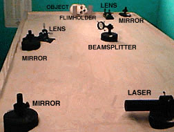
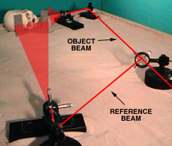

Què la caracteritza?
L'holografia és una tècnica que deriva de la fotografia en tant en quant també fa servir una pel·lícula fotosensible. A diferència de la pel·lícula d'una fotografia, un holograma no registra directament la llum reflectida pels objectes, sinó les interferències que es produeixen entre un raig làser que excita directament el material sensible i un altre làser que es reflecteix en l'objecte holografiat. L'objecte i els làsers estan col·locats de tal forma que la holografia captura un front d'ones que permet reconstruir diversos punts de vista del motiu representat.
De quins elements consta?
Durant la creació de l'holografia, es fa servir una pel·lícula fotosensible, un làser i un sistema de miralls i lents. El resultat final s'obté revelant aquesta pel·lícula.
L'esquema del sistema que s'utilitza durant la creació de l'holografia s'il·lustra en aquestes figures (cortesia de Frank DeFreitas, www.holoworld.com):
|
 |
 |
Un cop creada l'holografia, no cal cap altre element per visualitzar-la.
On es fa servir?
Les holografies són una evolució de les fotografies, i tenen aplicacions semblants a aquestes, amb l'avantatge de poder capturar diferents punts de vista en una sola placa.
Donada l'extrema dificultat de reproduir una holografia determinada, també s'utilitza com a sistema de protecció contra falsificacions en targetes de crèdit, llicències de programes informàtics, etc.
Quines limitacions té?
El principal inconvenient de les holografies és que el procés de creació requereix un procés de revelat que impedeix que es puguin crear de forma interactiva. Per tant, actualment aquesta tècnica no és aplicable per reproduir seqüències animades.
Una altra limitació, depenent del tipus particular d'holografia, és que la seva visualització és molt sensible a les condicions de llum ambientals i a la direcció de visió.
Altres comentaris
Els principis d'òptica i física en que es basa l'holografia (el fenomen de la interferència entre llums coherents com el làser) no són trivials i estan fora de l'objectiu d'aquest llibre. Tanmateix, podeu trobar més informació a www.holoworld.com/